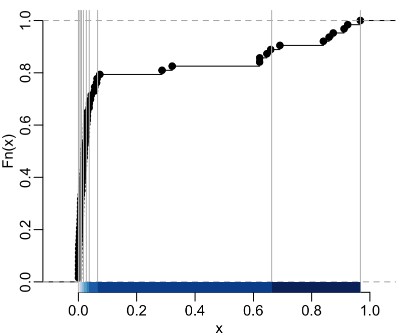
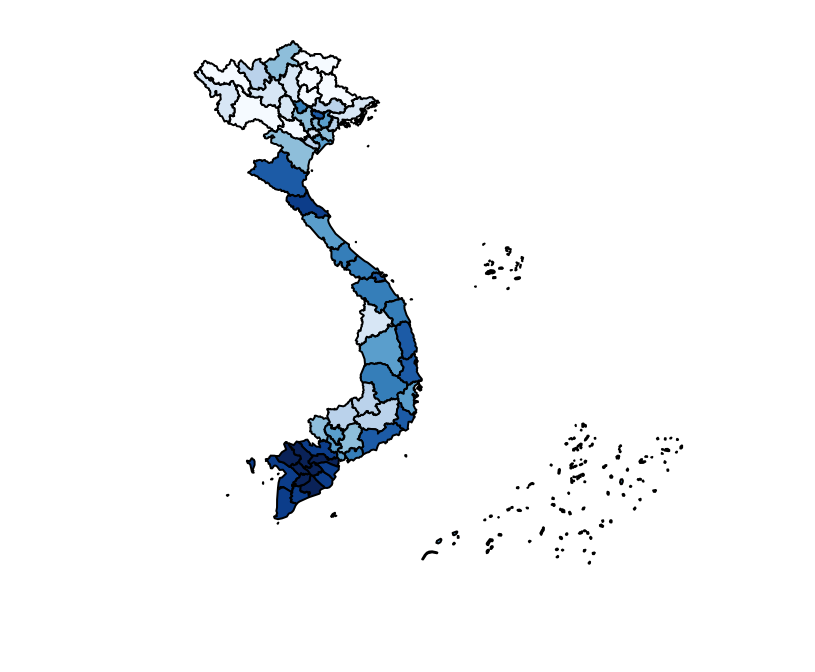
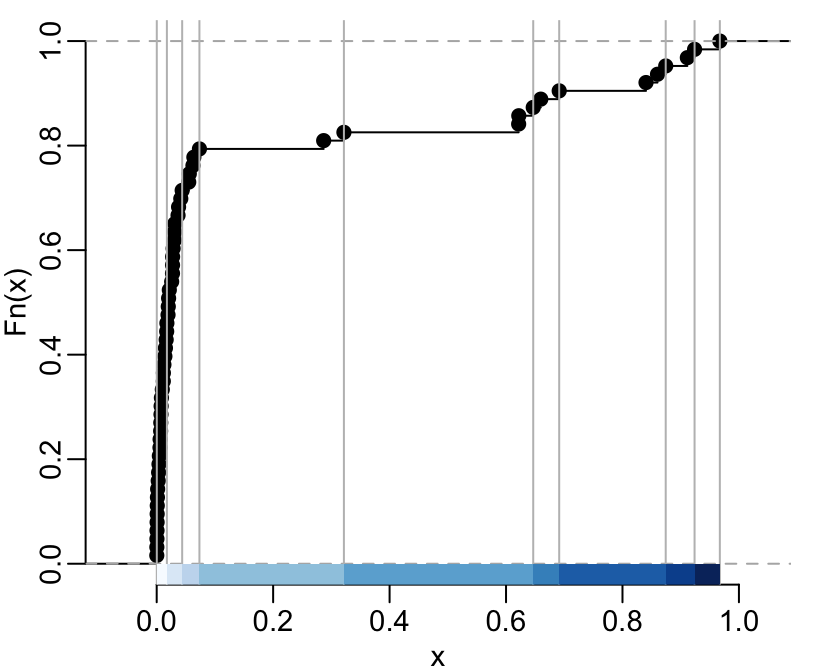
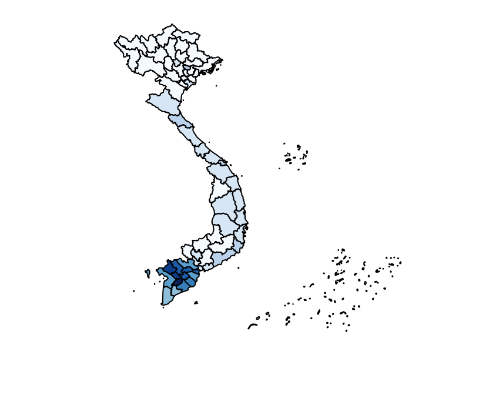
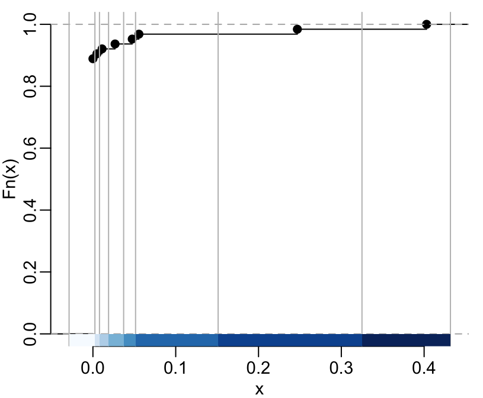
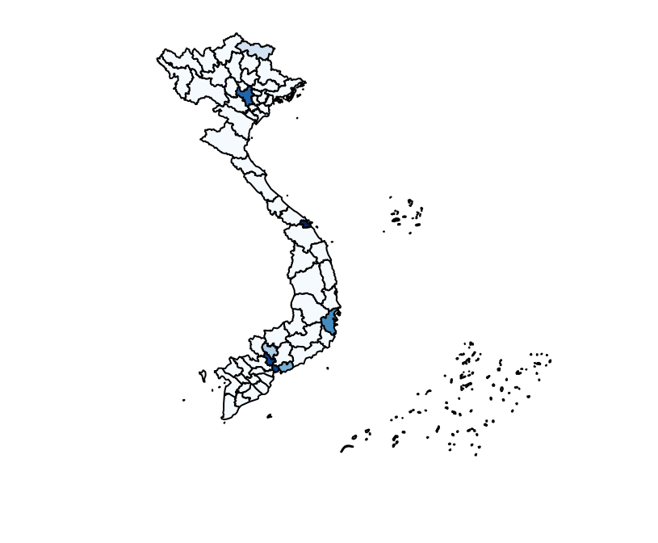

Using globcoverVN
Marc Choisy
2017-06-01
The globcoverVN package contains land use data for Vietnam from the GlobCover project. It is made of a rasterLayer object that can be loaded with the getgcvn function and of the SpatialPolygonsDataFrame provinces object that contains, for each province, the percentage of land cover of each type. Below we describe in detail these data and their use.
Installation and loading
You can install globcoverVN from Bitbucket with:
> # install.packages("devtools")
> devtools::install_bitbucket("choisy/globcoverVN", build_vignettes = TRUE)Once installed, you can load the package:
> library(globcoverVN)Usage examples
The raster file can be loaded by the getgcvn function:
> landuse <- getgcvn()The code of the different categories of landuse can be seen with the legend method:
> show_legend(landuse)
11 : Post-flooding or irrigated croplands (or aquatic)
14 : Rainfed croplands
20 : Mosaic cropland (50-70%) / vegetation (grassland/shrubland/forest) (20-50%)
30 : Mosaic vegetation (grassland/shrubland/forest) (50-70%) / cropland (20-50%)
40 : Closed to open (>15%) broadleaved evergreen or semi-deciduous forest (>5m)
50 : Closed (>40%) broadleaved deciduous forest (>5m)
60 : Open (15-40%) broadleaved deciduous forest/woodland (>5m)
70 : Closed (>40%) needleleaved evergreen forest (>5m)
100 : Closed to open (>15%) mixed broadleaved and needleleaved forest (>5m)
110 : Mosaic forest or shrubland (50-70%) / grassland (20-50%)
120 : Mosaic grassland (50-70%) / forest or shrubland (20-50%)
130 : Closed to open (>15%) (broadleaved or needleleaved, evergreen or deciduous) shrubland (<5m)
140 : Closed to open (>15%) herbaceous vegetation (grassland, savannas or lichens/mosses)
150 : Sparse (<15%) vegetation
160 : Closed to open (>15%) broadleaved forest regularly flooded (semi-permanently or temporarily) - Fresh or brackish water
170 : Closed (>40%) broadleaved forest or shrubland permanently flooded - Saline or brackish water
190 : Artificial surfaces and associated areas (Urban areas >50%)
200 : Bare areas
210 : Water bodies
220 : Permanent snow and iceThe output can also be assigned to an data frame:
> leg <- show_legend(landuse)
11 : Post-flooding or irrigated croplands (or aquatic)
14 : Rainfed croplands
20 : Mosaic cropland (50-70%) / vegetation (grassland/shrubland/forest) (20-50%)
30 : Mosaic vegetation (grassland/shrubland/forest) (50-70%) / cropland (20-50%)
40 : Closed to open (>15%) broadleaved evergreen or semi-deciduous forest (>5m)
50 : Closed (>40%) broadleaved deciduous forest (>5m)
60 : Open (15-40%) broadleaved deciduous forest/woodland (>5m)
70 : Closed (>40%) needleleaved evergreen forest (>5m)
100 : Closed to open (>15%) mixed broadleaved and needleleaved forest (>5m)
110 : Mosaic forest or shrubland (50-70%) / grassland (20-50%)
120 : Mosaic grassland (50-70%) / forest or shrubland (20-50%)
130 : Closed to open (>15%) (broadleaved or needleleaved, evergreen or deciduous) shrubland (<5m)
140 : Closed to open (>15%) herbaceous vegetation (grassland, savannas or lichens/mosses)
150 : Sparse (<15%) vegetation
160 : Closed to open (>15%) broadleaved forest regularly flooded (semi-permanently or temporarily) - Fresh or brackish water
170 : Closed (>40%) broadleaved forest or shrubland permanently flooded - Saline or brackish water
190 : Artificial surfaces and associated areas (Urban areas >50%)
200 : Bare areas
210 : Water bodies
220 : Permanent snow and iceAnd then:
> str(leg)
'data.frame': 20 obs. of 3 variables:
$ landtype: chr "Post-flooding or irrigated croplands (or aquatic)" "Rainfed croplands" "Mosaic cropland (50-70%) / vegetation (grassland/shrubland/forest) (20-50%)" "Mosaic vegetation (grassland/shrubland/forest) (50-70%) / cropland (20-50%)" ...
$ code : num 11 14 20 30 40 50 60 70 100 110 ...
$ color : chr "#AAF0F0" "#FFFF64" "#DCF064" "#CDCD66" ...This raster file can be plotted as follow:
> colors <- leg$color
> plot(landuse, col = colors, legend = FALSE, axes = FALSE)
> l <- length(colors)
> x <- ceiling(l / 2)
> sel1 <- 1:x
> sel2 <- (x + 1):l
> leg1 <- leg$code[sel1]
> leg2 <- leg$code[sel2]
> col1 <- colors[sel1]
> col2 <- colors[sel2]
> legend("left", legend = leg1, fill = col1, bty = "n")
> legend("right", legend = leg2, fill = col2, bty = "n")
> show_legend(landuse)
11 : Post-flooding or irrigated croplands (or aquatic)
14 : Rainfed croplands
20 : Mosaic cropland (50-70%) / vegetation (grassland/shrubland/forest) (20-50%)
30 : Mosaic vegetation (grassland/shrubland/forest) (50-70%) / cropland (20-50%)
40 : Closed to open (>15%) broadleaved evergreen or semi-deciduous forest (>5m)
50 : Closed (>40%) broadleaved deciduous forest (>5m)
60 : Open (15-40%) broadleaved deciduous forest/woodland (>5m)
70 : Closed (>40%) needleleaved evergreen forest (>5m)
100 : Closed to open (>15%) mixed broadleaved and needleleaved forest (>5m)
110 : Mosaic forest or shrubland (50-70%) / grassland (20-50%)
120 : Mosaic grassland (50-70%) / forest or shrubland (20-50%)
130 : Closed to open (>15%) (broadleaved or needleleaved, evergreen or deciduous) shrubland (<5m)
140 : Closed to open (>15%) herbaceous vegetation (grassland, savannas or lichens/mosses)
150 : Sparse (<15%) vegetation
160 : Closed to open (>15%) broadleaved forest regularly flooded (semi-permanently or temporarily) - Fresh or brackish water
170 : Closed (>40%) broadleaved forest or shrubland permanently flooded - Saline or brackish water
190 : Artificial surfaces and associated areas (Urban areas >50%)
200 : Bare areas
210 : Water bodies
220 : Permanent snow and iceIn addition to this RasterLayer resource, the package also provides SpatialPolygonsDataFrame resources that contains the polygons of the provinces of Vietnam at different points in time together with the proportions of the different categories of land use for each province, in the form of attributes. These SpatialPolygonsDataFrame resources can be retrieved thanks to the getlanduse function:
> prov2008 <- getlanduse(2008)
> str(prov2008@data)
'data.frame': 63 obs. of 41 variables:
$ province: chr "An Giang" "Ba Ria - Vung Tau" "Bac Giang" "Bac Kan" ...
$ 11 : num 0.911396 0.03667 0.007003 0.000273 0.321547 ...
$ 14 : num 0.0213 0.37934 0.23353 0.00627 0.19674 ...
$ 20 : num 0.01063 0.07835 0.12403 0.00878 0.13278 ...
$ 30 : num 0.00514 0.01746 0.19113 0.0605 0.0666 ...
$ 40 : num 0.0021 0.15572 0.20113 0.46956 0.00809 ...
$ 50 : num 7.96e-05 1.02e-03 2.73e-04 1.82e-05 4.96e-04 ...
$ 60 : num 1.54e-03 6.52e-03 1.55e-03 4.56e-03 7.63e-05 ...
$ 70 : num 0.000424 0.006371 0.014393 0.040316 0.022924 ...
$ 100 : num 0.000769 0.047807 0.034197 0.040535 0.065225 ...
$ 110 : num 1.06e-04 0.00 4.55e-05 3.64e-05 1.87e-03 ...
$ 120 : num 5.30e-05 0.00 4.55e-05 3.64e-05 2.52e-03 ...
$ 130 : num 0.0137 0.1982 0.1794 0.3686 0.0437 ...
$ 140 : num 0.00289 0.03414 0.00487 0 0.1364 ...
$ 150 : num 0 0.000535 0 0 0 ...
$ 160 : num 0 0 0 0 0 ...
$ 170 : num 0 0.021545 0 0 0.000267 ...
$ 190 : num 0 0.00199 0 0 0 ...
$ 200 : num 7.96e-05 2.58e-03 9.09e-05 0.00 1.91e-04 ...
$ 210 : num 0.029756 0.011721 0.008276 0.000546 0.000572 ...
$ 220 : num 0 0 0 0 0 ...
$ 11_pop : num 0.8196 0.1236 0.0213 0.0104 0.3604 ...
$ 14_pop : num 0.0408 0.3648 0.447 0.0333 0.2064 ...
$ 20_pop : num 0.0454 0.1517 0.2086 0.0491 0.1534 ...
$ 30_pop : num 0.0127 0.065 0.1987 0.1036 0.0537 ...
$ 40_pop : num 0.00326 0.05868 0.03871 0.38485 0.00533 ...
$ 50_pop : num 1.67e-04 9.14e-04 3.03e-04 1.72e-05 3.71e-04 ...
$ 60_pop : num 0.001807 0.007032 0.003118 0.002707 0.000123 ...
$ 70_pop : num 0.000239 0.002357 0.001826 0.032272 0.014596 ...
$ 100_pop : num 0.000376 0.02007 0.008279 0.051629 0.040319 ...
$ 110_pop : num 7.09e-05 0.00 3.06e-05 1.33e-05 1.39e-03 ...
$ 120_pop : num 1.83e-05 0.00 7.30e-06 3.07e-05 1.58e-03 ...
$ 130_pop : num 0.0192 0.0814 0.0588 0.3318 0.0343 ...
$ 140_pop : num 0.0123 0.04755 0.00652 0 0.12702 ...
$ 150_pop : num 0 0.0013 0 0 0 ...
$ 160_pop : num 0 0 0 0 0 ...
$ 170_pop : num 0 0.006013 0 0 0.000152 ...
$ 190_pop : num 0 0.0267 0 0 0 ...
$ 200_pop : num 0.003619 0.035835 0.00019 0 0.000237 ...
$ 210_pop : num 0.040463 0.007022 0.006633 0.000406 0.00072 ...
$ 220_pop : num 0 0 0 0 0 0 0 0 0 0 ...The variables whose names end with _pop correspond to percentages of land cover when correcting for the local human population density as available from the worldpopVN package. The user interested in seeing how this is computed can have a look at the data_creation script in the data-raw folder of the package sources. This script makes use of the lusummary and lupopsummary non-exported functions that are in the lusummary.R and lupopsummary.R files in the R folder of the package sources. One can verify that the percentages of land use sum to 1:
> rowSums(prov2008@data[, 2:21])
1 6 2 3 4 5 7 8 9 10 11 12 13 14 17 15 16 18 19 20 21 22 25 26 27
1 1 1 1 1 1 1 1 1 1 1 1 1 1 1 1 1 1 1 1 1 1 1 1 1
23 24 28 30 29 31 32 33 34 35 36 37 38 39 40 41 42 43 44 45 46 47 48 49 50
1 1 1 1 1 1 1 1 1 1 1 1 1 1 1 1 1 1 1 1 1 1 1 1 1
51 52 53 54 55 56 57 58 59 60 61 62 63
1 1 1 1 1 1 1 1 1 1 1 1 1
> rowSums(prov2008@data[, 22:41])
1 6 2 3 4 5 7 8 9 10 11 12 13 14 17 15 16 18 19 20 21 22 25 26 27
1 1 1 1 1 1 1 1 1 1 1 1 1 1 1 1 1 1 1 1 1 1 1 1 1
23 24 28 30 29 31 32 33 34 35 36 37 38 39 40 41 42 43 44 45 46 47 48 49 50
1 1 1 1 1 1 1 1 1 1 1 1 1 1 1 1 1 1 1 1 1 1 1 1 1
51 52 53 54 55 56 57 58 59 60 61 62 63
1 1 1 1 1 1 1 1 1 1 1 1 1 You can also check that, for example, in Vietnam, there is no “Permanent snow and ice”:
> sum(prov2008@data$`220`)
[1] 0.0006297298
> sum(prov2008@data$`220_pop`)
[1] 0.0001935054This data can be visualize this way as for the example show below for the “Post-flooding or irrigated croplands (or aquatic)”. Let’s first make a palette of colors form RColorBrewer:
> n <- 9
> pal <- RColorBrewer::brewer.pal(n, "Blues")Let’s find a classes intervals definition:
> library(classInt)
> tmp <- classIntervals(prov2008@data$`11`, n = n, style = "quantile")
> plot(tmp, pal = pal, main = NA)
Once we’re satisfied with the class interval definition we can plot the map:
> plot(prov2008, col = findColours(tmp, pal))
Or, with another definition of the classes intervals:
> tmp <- classIntervals(prov2008@data$`11`, n = n, style = "jenks")
> plot(tmp, pal = pal, main = NA)
> plot(prov2008, col = findColours(tmp, pal))
The same thing, but with values weighted by the local human population density:
> tmp <- classIntervals(prov2008@data$`11_pop`, n = n, style = "jenks")
> plot(tmp, pal = pal, main = NA)
> plot(prov2008, col = findColours(tmp, pal))As another example, let’s see the urban areas:
> tmp <- classIntervals(prov2008@data$`190_pop`, n = n, style = "jenks")
Warning in classIntervals(prov2008@data$`190_pop`, n = n, style = "jenks"):
n greater than number of different finite values\nn reset to number of
different finite values
Warning in classIntervals(prov2008@data$`190_pop`, n = n, style = "jenks"):
n same as number of different finite values\neach different finite value is
a separate class
> plot(tmp, pal = pal, main = NA)
> plot(prov2008, col = findColours(tmp, pal))
Which, again, makes quite some sense (apart maybe for Cao Bang and Hai Phong?).